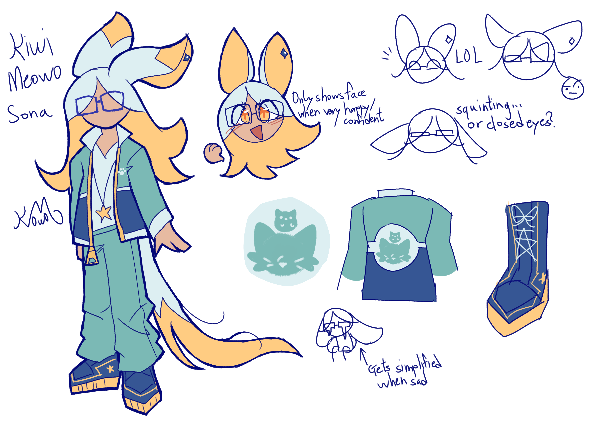

"Banger"

Hey uh, this is just my sona. But since you are here, let me tell you a fun fact about me. In my head, I imagine Kyrea, Lavender, Cosmos and my sona living together and hang around. It's kinda a coping mechanism for being alone for so long, but seriously it's fun you should try it if you can.
Facts about her and the Domestic AU characters(?) :
- Kiwi lives in an isolated island, with a small looking house which has a large underground floor
- She calls it Bat Island because it's shaped like a bat, yea that's all
- If Kiwi is too bored, she can summon a random event
- ( e.g. Teleporting an irrelevant fictional character in the island )
- Kiwi and Kyrea often talk about their interests together
- Life may be hard, but hanging out with Cosmos seems to help Kiwi with her stress
- Oh and she can shapeshift
- I created this sona because it feels odd not having any.
- And using the old one ( which way younger than me ) doesn't feel right
- The pattern on her shoes applies to both sides
- Don't expect me to draw her much tho, I only drew the ref to at least have a sona